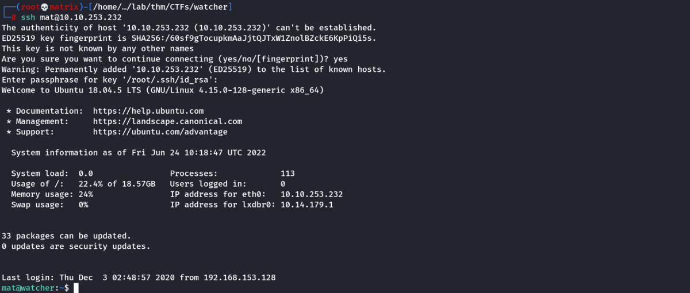

watcher
THM: Watcher
Enumeration
Dirsearch

Website Enumeration

Its a PHP web server running Jekyll v4.1.1 for static page generation
The Login link found in Dirsearch is not working.
However, we found some answers in /robots.txt

We were able to get to /flag_1.txt but the /secret_file.... is forbidden. We will come back to it later.
LFI Enumeration
THM Hint: LFI
I noticed the URL when i opned any item.
http://10.10.70.174/post.php?post=striped.php

It could be a potential LFI vector. Lets use LFISuite to scan it.
LFISuite indeed suggests that the the URL is vulnerable. Lets try to open those 2 files manually.
Indeed it was vulnerable.
Users Found:
will
ftpuser
mat
toby
Now, remember we had a /secret_filsecret_file_do_not_read.txte_do_not_read.txt file which we had no permission to open in the web server. However, with LFI active now lets try to read it.
Note: The /secret... confirms that the file will be in the same directory as the web server.
So I will use this URL: http://10.10.70.174/post.php?post=secret_file_do_not_read.txt
It opened and indeed, we found FTP credentials.
FTP Credentials Found
Username: ftpuser
Password: givemefiles777
FTP Enumeration
I was able to login successfully with the FTP credentials. I got the flag_2.txt.
I noticed that the directory files is writable by me(ftpuser) , so i created a file hacked.txt with some contents to check if i can access it from browser.
The default storage location for FTP is FTP user's home directory. However, it uses another directory named ftp.
Eg. /home/$USER/ftp
How i found this ?
I searched for configuration files for vsftpd 3.0.3 in google and found the configurations are stored in /etc/vsftpd.conf
As we have LFI I open the file.
http://10.10.70.174/post.php?post=/etc/vsftpd.conf

We can see the highlighted local root section. I open the same in our case.
/home/ftpuser/ftp/flag_2.txt
or
/home/ftpuser/ftp/files/hacked.txt
RCE
We can run any of these in the LFI to confirm that we found the FTP's data directory. Now we can put PHP-Reverse-Shell through FTP inside the files folder and can run it using LFI.

The above confirms that we can use RCE. Lets create a PHP Reverse Shell and upload it with FTP.
We use the following.
/usr/share/webshells/php/php-reverse-shell.php form pentestmonkey
I make the necessary IP and Port changes in the php file and uploaded it inside the files directory.
Foothold
Lets start a netcat listener and open the file in the browser using LFI.
Open this URL: http://10.10.70.174/post.php?post=/home/ftpuser/ftp/files/php-reverse-shell.php
We have initial access of the system.
Next, I searched for the next flag and found it inside a directory named more_secrets_a9f10a in the root directory of web server.

No Privilege Escalation vectors are seen in this user.
Next, Lets try to do lateral movement to other users.
Users Found:
will
ftpuser
mat
toby
Lateral Movement
I stabilized the shell with python. [Note: For this machine, i used /usr/bin/python3]
Check : (CybeXRay Guides ----> Shells ----> Shell Beautify)
Then upon checking for sudo privileges, I found we can run any program as user toby.
I run sudo -u toby /bin/bash to switch to user toby
We got flag_4.txt and a note to continue our lateral movement.
I read the note.txt and found that there is crontab entry. I checked it & indeed a script which is writable by me(toby) gets run every minute as the user mat
My Solution : (Without using a reverse shell connection)
I open the cow.sh and changed its content to the following.
#!/bin/bash
cp /home/mat/cow.jpg /tmp/cow.jpg
if [ ! -d "/home/mat/.ssh/" ]; then
mkdir /home/mat/.ssh
echo 'ssh-rsa AAAAB3NzaC1yc2EAAAADAQABAAABgQCybu4M+3Dw0hOMC5zXhzbTSGZMJ2vVSFTreZVVc1OQyw1eoF4+Yc8nsUOupsWVHRrPIDQQMfsIyPiPHrzxqOcxBTxIOcEvA9/OZ7AG53OGf3RwvAGxgzBSpnpGdtRUEzRJq9aMkxDXz22oymAVghK8xM2IMqI5FZQ7CJjKWxqsX7hXq2QJSO0JfhD/ZWjTi4xzEnAcrUeyxe3ueoLt2vJcS9yKPin8f0wxUAwU2Nm1gtL98SZFnjfxfRi0wbAqKBaEbuxZMFwjwRz/+7Dc8bv4gBKy4LiEtOWIzib6dX7lzFlKTcmo+cXI9OltfZ2FGGS/6AtaUFq5ies1/QfsvcxWGO+Pq5DiO6N4fWrIiSWB5xpsL/lLxmHnx5DH9j2RncTkSRru+goeNLLzhdT8YuvjHQyj6YR/ngHLjZX98W+h4DAnx1fGDG1JNsOd1n6IEc4g42vzAzL5tw7yzdNNERgZts/GVF1K73SHeBKAARuye32yskbOgcK0oDv9M4rjBNs= root@matrix' > /home/mat/.ssh/authorized_keys
chmod 600 /home/mat/.ssh/authorized_keys
fi
I copied my kali machine's id_rsa.pub file to a newly created .ssh directory into the file authrorized_keys using the above script.

Then we wait 1 min and try to connec to mat with SSH. If everything works properly, we should be able to SSH into the machine using my own paraphrase.
And indeed SSH was successful.

we get the flag_5 in the home directory of mat. Plus there is note to further help in our lateral movement.

As we can see as per the notes, the program will_script.py can be run by me(mat) as user will.
We go to scripts folder and check the program.
The program runs 3 system commands as user will & also the program takes input from sys.argv[1] from command line.
Which represents the * in the sudo
(will) NOPASSWD: /usr/bin/python3 /home/mat/scripts/will_script.py *
I run the program as: sudo -u will /usr/bin/python3 /home/mat/scripts/will_script.py 2
To show the id, or we can use 1 for ls -lah or 3 for cat /etc/passwd

However, one intresting point is that, it uses a function called get_command to get parse the user input.
The get_command is loaded from a custom module cmd.py
cmd.py is writable by me(mat)
I modify the cmd.py to the following:
(I added my own imports and command)
import os
import sys
def get_command(num):
os.system("/bin/bash")
if(num == "1"):
return "ls -lah"
if(num == "2"):
return "id"
if(num == "3"):
return "cat /etc/passwd"

As we can see, we have become user will now.
Privilege Escalation
Now, starts the path to root.

Upon enumerating the user, I found that will belongs to a group named adm
I then started to find all files having group adm
find / -type f -group adm 2>/dev/null
We found a file at an intresting location /opt/backups
The file name is key.b64
The extention suggests its base64. Lets view it.
It Looks like base64 encoded so I decoded it and found an id_rsa key. May be its the ssh id_rsa of root.
cat key.b64 | base64 -d

I copied the key to a local file watcher_id_rsa and changed its permission to 600. I tried to SHH into the machine as root using the watcher_id_rsa file. I was successful.
Thanks!!